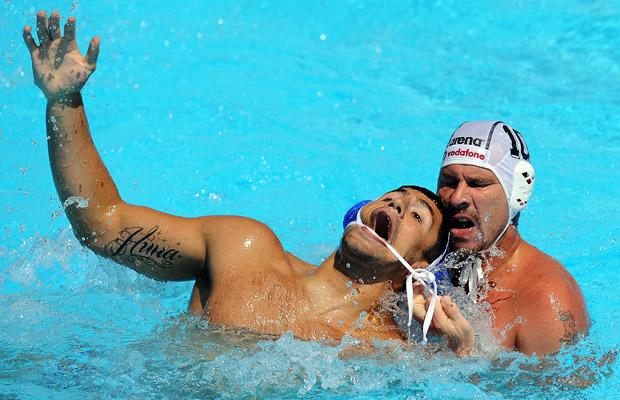
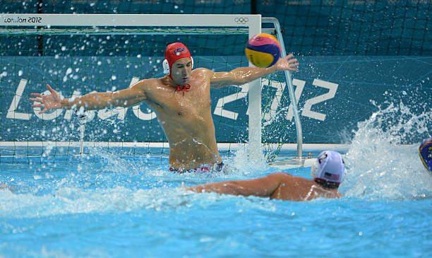
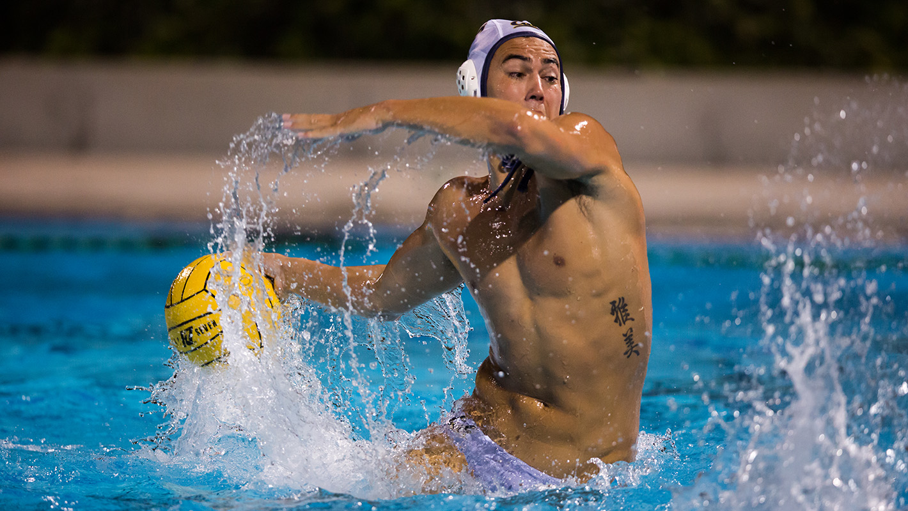
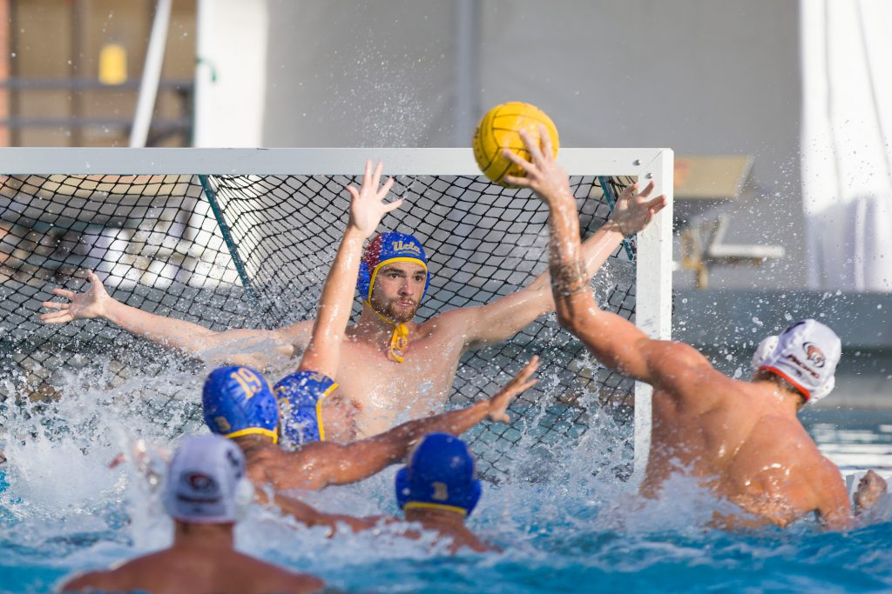

Water Polo is considered the world's hardest sport. This sport requires a person to be in excellent physical condition. There is not much protection when playing this sport; the only protection given is a speedo and cap with ear protectors.This sport requires for a total of seven players, 6 in the field and 1 goalie. A field player is required to swim up and down the pool to score goals and play defense. A goalie must be able to block a ball by treading as high as they can. This sport is a sport of aggression. It requires a person to be physical.
|  |  |
|---|---|
|  |  |
Click here to check out the rule book of Water Polo.
Click here to check out the different levels of water polo.
Chris Sandoval Period 1